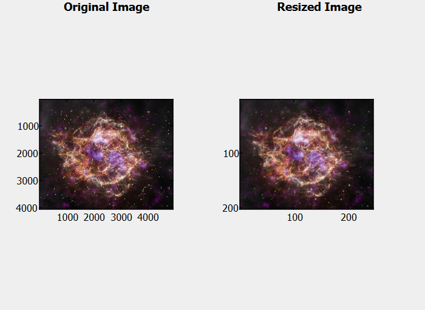

img2 = imresize(img, scale)
img2 = imresize(img, [numrows numcols])
[Y, newmap] = imresize(X, map, ...)
... = imresize(..., method)
... = imresize(..., Name, Value)
| Paramètre | Description |
|---|---|
| img | Image à redimensionner, spécifiée comme un tableau numérique ou logique de n'importe quelle dimension. L'entrée doit être non-creuse (nonsparse) et les entrées numériques doivent être réelles. |
| scale | Facteur de redimensionnement, spécifié comme un nombre positif ou un vecteur à deux éléments. Si scale est entre 0 et 1, la sortie est plus petite ; si >1, la sortie est plus grande. imresize applique le même facteur aux lignes et colonnes sauf si un vecteur est fourni. |
| [numrows numcols] | Dimensions en lignes et colonnes de l'image de sortie, spécifiées comme un vecteur à deux éléments de nombres positifs. NaN peut être utilisé pour une dimension afin de préserver le ratio d'aspect. |
| X | Image indexée à redimensionner, spécifiée comme un tableau numérique réel non-creux d'entiers positifs. |
| map | Colormap associée à l'image indexée X, spécifiée comme une matrice c-by-3 avec des valeurs dans [0,1]. |
| method | Méthode d'interpolation (optionnelle, par défaut : 'bicubic') : doit toujours être le dernier paramètre positionnel. |
| Name, Value | Arguments nom-valeur optionnels. |
| Paramètre | Description |
|---|---|
| B | Image redimensionnée, renvoyée sous forme de tableau numérique ou logique du même type que l'image d'entrée A. |
| Y | Image indexée redimensionnée, renvoyée sous forme de tableau numérique du même type que l'image indexée d'entrée X. |
| newmap | Colormap de l'image indexée redimensionnée Y, renvoyée comme une matrice m-by-3. Par défaut, imresize retourne une nouvelle colormap optimisée. Pour retourner la colormap originale, utilisez l'argument nom-valeur 'Colormap'. |
La fonction imresize redimensionne une image selon un facteur d'échelle ou une taille de sortie spécifiée. Elle prend en charge les images en niveaux de gris, RGB, binaires, ainsi que les images indexées avec colormap.
Pour les images numériques et logiques, la méthode d'interpolation par défaut est 'bicubic'.
Lors du redimensionnement, imresize applique le facteur d'échelle aux dimensions ligne et colonne sauf si un vecteur à deux éléments est spécifié. Si la taille de sortie n'est pas entière, imresize arrondit vers le haut en utilisant la fonction ceil.
Pour les images indexées, imresize retourne par défaut l'image redimensionnée et une colormap optimisée. La colormap originale peut être retournée en utilisant l'argument nom-valeur 'Colormap'.
Les méthodes d'interpolation prises en charge incluent :
Paires nom-valeur prises en charge :
Limitations :
filename = [tempdir, 'apollo_8_earthrise_1968_as08-14-2383.jpg'];
websave(filename, 'https://www.nasa.gov/wp-content/uploads/2025/05/3dmodels-casa-2025-astro.jpg');
im = imread(filename);
size(im)
im1 = imresize(im, 0.05, 'bicubic');
size(im1)
figure;
subplot(1,2,1); % 1 row, 2 columns, first subplot
image(im);
title('Original Image');
subplot(1,2,2); % second subplot
image(im1);
title('Resized Image');
| Version | Description |
|---|---|
| 1.15.0 | version initiale |